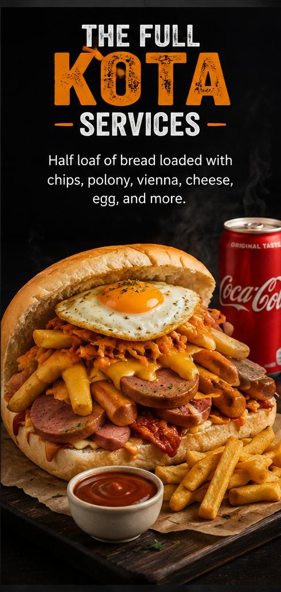
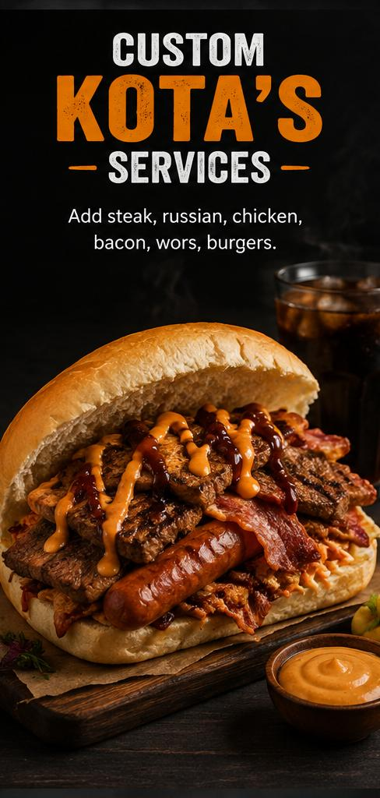
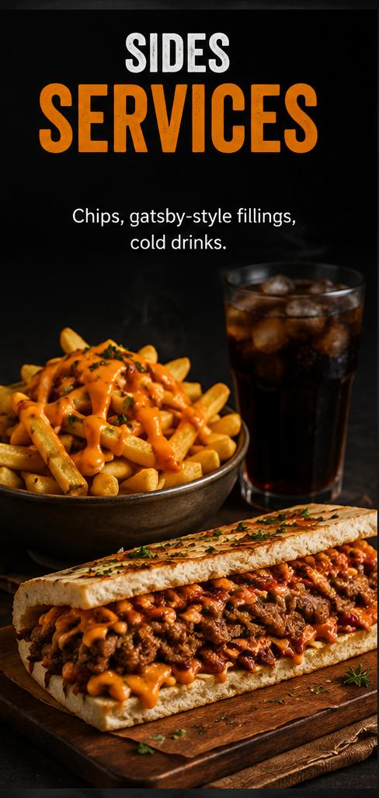

The Full Kota
A generous kota packed with classic favourites.
See menu details
Johannesburg street food
Every Bite Hits Different
From the streets, for the people
Welcome to Kota Town, where South African kota culture meets generous fillings and bold flavour. Find your favourite, build your own, and get in touch to enquire about an order.

What we serve
A generous kota packed with classic favourites.
See menu details
Choose your favourite fillings and make it yours.
Enquire now
Add a little extra to complete your meal.
View price listPlan your visit
Monday–Friday10:00–20:00
Saturday–Sunday09:00–22:00
Hours may change on public holidays. Please contact us to confirm availability.
Need to know?
We are based in Soweto, Johannesburg, South Africa. Contact us to confirm service and delivery arrangements.
Yes. Use the enquiry form to tell us which fillings you would like and we will respond about availability.
We accept catering enquiries for events, campus activities and gatherings. Please include your date and estimated quantity.